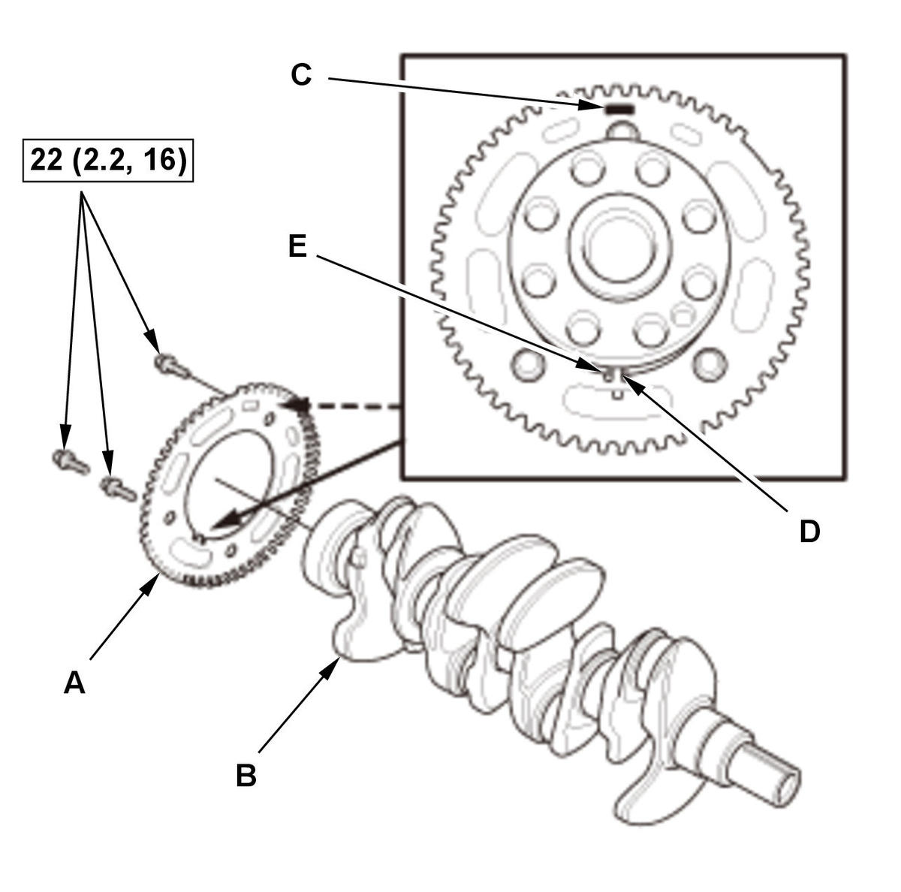
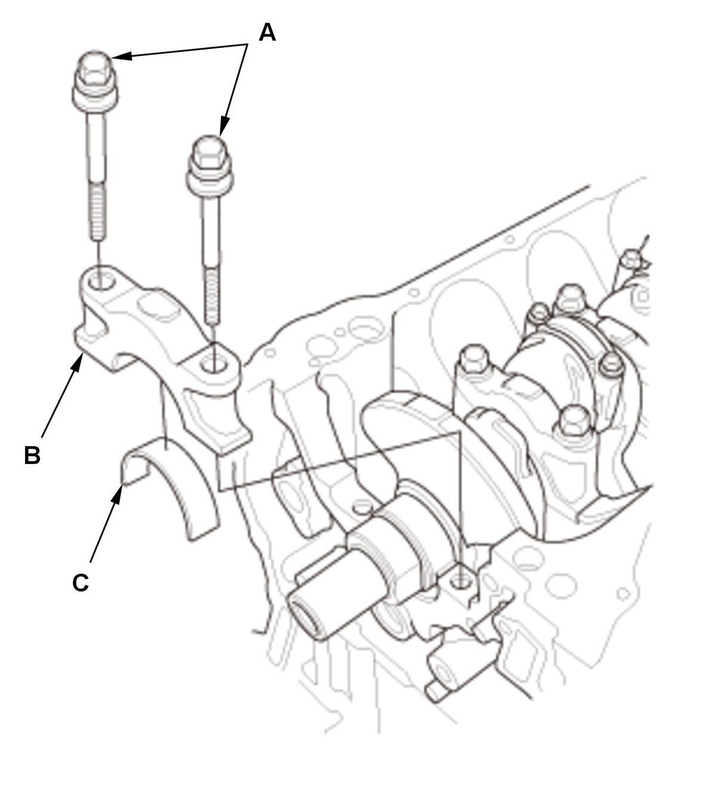
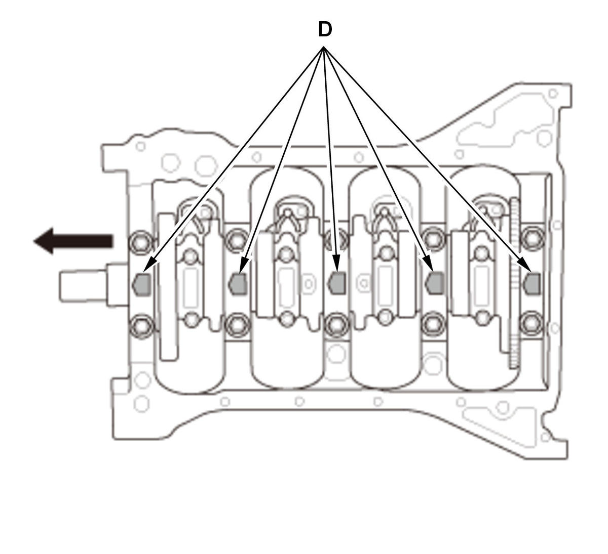
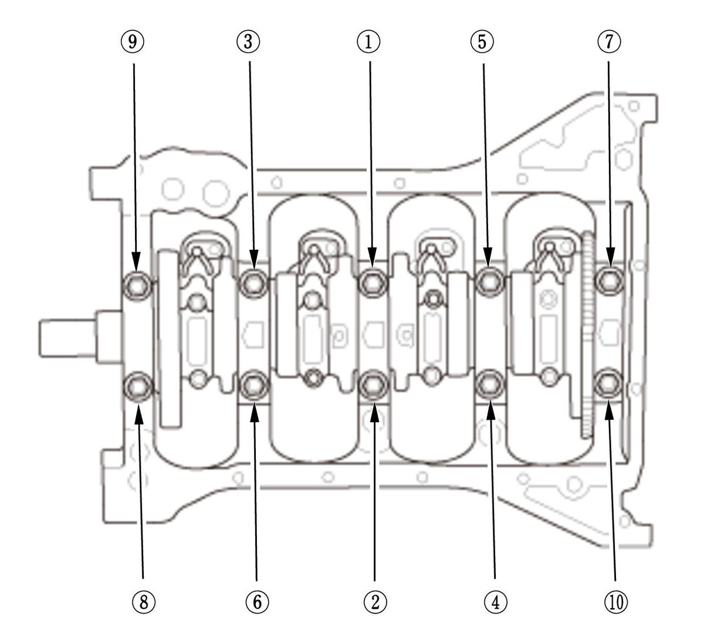
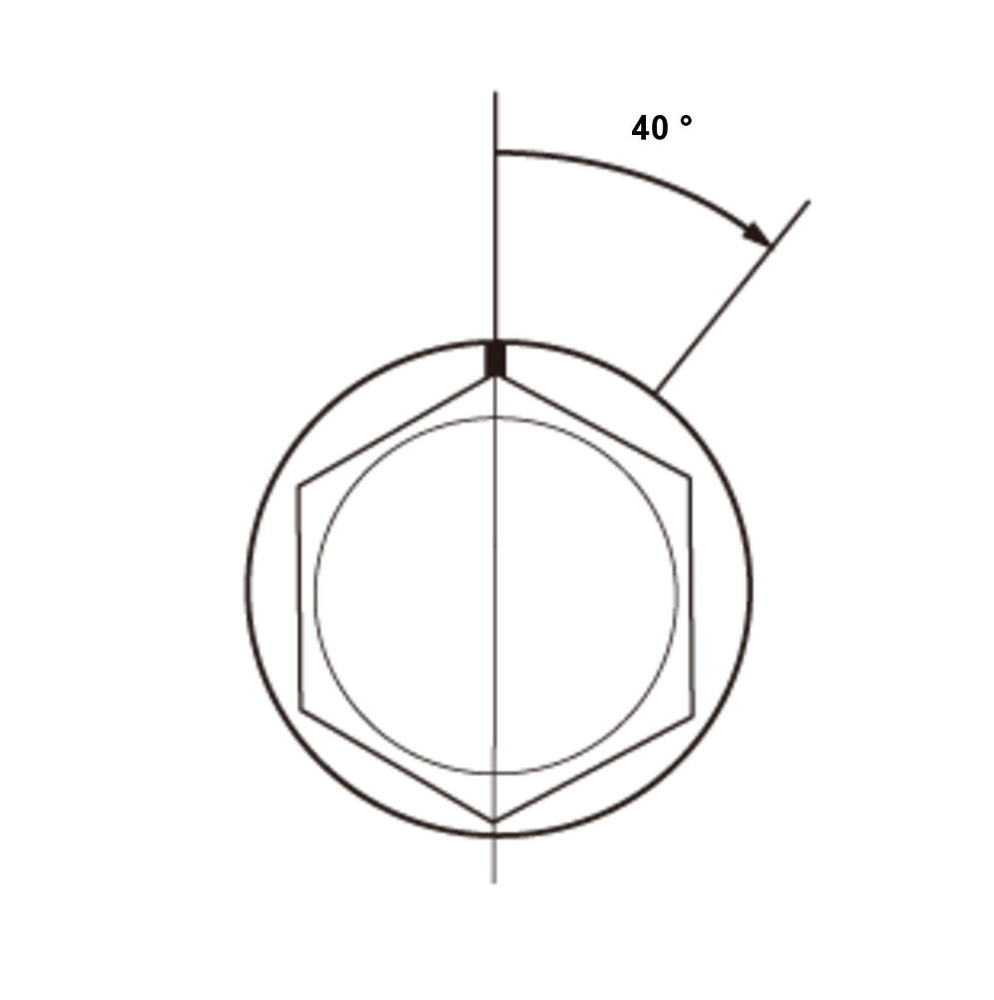

Crankshaft and CKP Pulse Plate Removal, Installation, and Inspection (1.5L Engine): Installation
NOTE: How to read the torque specifications.
- Crankshaft Main Bearing Clearance - Check
- CKP Pulse Plate - Install

Courtesy of HONDA, U.S.A., INC.1. Apply new engine oil to the threads and flanges of CKP pulse plate mounting bolts. 2. Install the CKP pulse plate (A) on the crankshaft (B).
NOTE:- Be careful not to damage the CKP pulse plate.
- Position the mark (C) facing it out side and align the portion (D) on the CKP pulse plate and groove (E) on the crankshaft.
- Crankshaft - Install
1. Install the bearing halves in the engine block and the connecting rods. 2. Apply a coat of new engine oil to the main bearings and the connecting rod bearings.
3. Hold the crankshaft (A) so rod journal No. 2 and rod journal No. 3 are straight up, then lower the crankshaft into the engine block.
NOTE: Be careful not to damage the journals and the CKP pulse plate (B).
- Thrust Washer - Install
1. Apply new engine oil to the thrust washer surfaces. Install the thrust washers (A) in the No. 4 journal of the engine block. - Main Bearing Cap - Install


Courtesy of HONDA, U.S.A., INC.HONDA, U.S.A., INC.1. Apply new engine oil to the bearing cap bolts (A) threads and flanges. 2. Install the bearing cap bolts to the main bearing cap (B).
3. Set the bearing halves (C), the main bearing caps, and the bearing cap bolts in place. Then loosely tighten the bearing cap bolts.
NOTE:
- Install the main bearing caps aligning the arrows (D) with the direction to the cam chain case.
- When loosely tightening the bearing cap bolts, do not sit the bolts on the bearing caps.
4. Lightly tap the main bearing caps with a plastic mallet until the main bearing caps sit on the engine block.
- Bearing Cap Bolt - Tighten


Courtesy of HONDA, U.S.A., INC.HONDA, U.S.A., INC.1. Tighten the bearing cap bolts, in the numbered sequence shown, to the specified torque. NOTE:
Do not rotate the crankshaft during inspection.
2. Tighten the bearing cap bolts an additional 40 deg..
Specified Torque: 30 N.m (3.1 kgf.m, 22 lbf.ft) - Connecting Rod Bearing Clearance - Check
- Connecting Rod Bolt - Inspect
1. Measure the diameter of each connecting rod bolt at point A and point B. 2. Calculate the difference in diameter between point A and point B.
3. If the difference in diameter is out of specification, replace the connecting rod bolt.
Point A-Point B = Difference in Diameter Difference in Diameter Specification: 0-0.05 mm (0-0.0020 in) - Connecting Rod Cap and Bearing Half - Install
1. Apply new engine oil to the threads of the connecting rod bolts. 2. Seat the rod journals into connecting rod No. 1 and connecting rod No. 4. Line up the mark (A) on the connecting rod and the connecting rod cap.
3. Install the connecting rod caps and the bolts finger-tight.
4. Rotate the crankshaft clockwise, and seat the journals into connecting rod No. 2 and connecting rod No. 3. Line up the mark on the connecting rod and the connecting rod cap.
5. Install the connecting rod caps and the bolts finger-tight.
6. Torque the connecting rod bolts to the specified torque. 7. Tighten the connecting rod bolts an additional 90 deg..
NOTE: Remove the connecting rod bolt if you tightened it beyond the specified angle, inspect the connecting rod bolts. Do not loosen it back to the specified angle.
Specified Torque: 13 N.m (1.3 kgf.m, 10 lbf.ft) - Transmission End Crankshaft Oil Seal - Install
1. Remove the transmission end crankshaft oil seal. 2. Clean and dry the transmission end crankshaft oil seal housing.
3. Apply a light coat of new engine oil to the lip of the new transmission end crankshaft oil seal.
4. Use the driver handle, 15 x 135L and the oil seal driver attachment, 92 mm to drive a new transmission end crankshaft oil seal (A) squarely into the oil seal case.
- Oil Seal Case - Install
1. Apply liquid gasket to the engine block mating surface of the oil seal case, and to the inside edge of the threaded bolt holes.
2. Install the oil seal case (A) with a new O-ring (B).
- Oil Pump - Install
- Oil Pan - Install
- Cam Chain Drive Sprocket - Install
1. Install the cam chain drive sprocket (A) and the key (B). - Cylinder Head - Install
- Drive Plate - Install (CVT)
- Pressure Plate, Clutch Disc, and Flywheel - Install (M/T)
- Transmission - Install
- Engine - Install